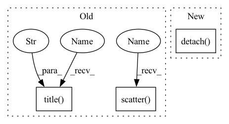

Pattern ID :38515

Before Change
flux[0] if self[f"I0_{r}"].value is None else self[f"I0_{r}"].value.detach().item(),
]
res = minimize(lambda x: np.mean((np.log10(flux) - np.log10(sersic_np(R, x[0], x[1], x[2])))**2), x0 = x0, method = "SLSQP", bounds = ((0.5,6), (R[1]*1e-3, None), (flux[0]*1e-3, None))) //, method = "Nelder-Mead"
plt.scatter(R, np.log10(flux))
plt.plot(R, np.log10(sersic_np(R, res.x[0], res.x[1], res.x[2])), color = "r", label = "fit")
plt.plot(R, np.log10(sersic_np(R, x0[0], x0[1], x0[2])), color = "orange", label = "init")
plt.legend()
plt.title(f"{res.success} n {res.x[0]:0.3f} Rs {res.x[1]:0.3e} I0 {res.x[2]:0.3e}")
plt.savefig(f"{self.name}_coma_test.jpg")
plt.close()
for i, param in enumerate([f"n_{r}", f"Rs_{r}", f"I0_{r}"]):
self[param].set_value(res.x[i], override_locked = (self[param].value is None))
After Change
res = minimize(lambda x: np.mean((np.log10(flux) - np.log10(sersic_np(R, x[0], x[1], x[2])))**2), x0 = x0, method = "SLSQP", bounds = ((0.5,6), (R[1]*1e-3, None), (flux[0]*1e-3, None))) //, method = "Nelder-Mead"
self[f"n_{r}"].set_value(res.x[0], override_locked = (self[f"n_{r}"].value is None))
self[f"Rs_{r}"].set_value(res.x[1], override_locked = (self[f"Rs_{r}"].value is None))
self[f"flux_{r}"].set_value(np.log10(sersic_I0_to_flux_np(res.x[2], self[f"n_{r}"].value.detach().item(), self[f"Rs_{r}"].value.detach().item(), self["q"].value.detach().item())), override_locked = (self[f"flux_{r}"].value is None))
if self[f"Rs_{r}"].uncertainty is None:
self[f"Rs_{r}"].set_uncertainty(0.02 * self[f"Rs_{r}"].value.detach().item(), override_locked = True)
if self[f"flux_{r}"].uncertainty is None:
In pattern: SUPERPATTERN
Frequency: 3
Non-data size: 3
Instances
Fragment ID: 110052095
Project Name: connorstoneastro/autoprof
Commit Name: 1755fb6a4b8078b28b0821a93913880d039f7f2f
Time: 2022-10-31
Author: connorstone628@gmail.com
File Name: autoprof/models/sersic_model.py
M Class Name: Sersic_Ray
N Class Name: Sersic_Ray
M Method Name: initialize(1)
N Method Name: initialize(1)
M Parent Class: Ray_Galaxy
N Parent Class: Ray_Galaxy
M File Name: autoprof/models/sersic_model.py
N File Name: autoprof/models/sersic_model.py
M Start Line: 97
M End Line: 124
N Start Line: 133
N End Line: 148
'>
Before Change
flux[0] if self["I0"].value is None else self["I0"].value.detach().item(),
]
res = minimize(lambda x: np.mean((np.log10(flux) - np.log10(sersic_np(R, x[0], x[1], x[2])))**2), x0 = x0, method = "SLSQP", bounds = ((0.5,6), (R[1]*1e-3, None), (flux[0]*1e-3, None))) //, method = "Nelder-Mead"
plt.scatter(R, np.log10(flux))
plt.plot(R, np.log10(sersic_np(R, res.x[0], res.x[1], res.x[2])), color = "r", label = "fit")
plt.plot(R, np.log10(sersic_np(R, x0[0], x0[1], x0[2])), color = "orange", label = "init")
plt.legend()
plt.title(f"{res.success} n {res.x[0]:0.3f} Rs {res.x[1]:0.3e} I0 {res.x[2]:0.3e}")
plt.savefig(f"{self.name}_coma_test.jpg")
plt.close()
for i, param in enumerate(["n", "Rs", "I0"]):
self[param].set_value(res.x[i], override_locked = (self[param].value is None))
After Change
res = minimize(lambda x: np.mean((np.log10(flux) - np.log10(sersic_np(R, x[0], x[1], x[2])))**2), x0 = x0, method = "SLSQP", bounds = ((0.5,6), (R[1]*1e-3, None), (flux[0]*1e-3, None)))
self["n"].set_value(res.x[0], override_locked = (self["n"].value is None))
self["Rs"].set_value(res.x[1], override_locked = (self["Rs"].value is None))
self["flux"].set_value(np.log10(sersic_I0_to_flux_np(res.x[2], self["n"].value.detach().item(), self["Rs"].value.detach().item(), self["q"].value.detach().item())), override_locked = (self["flux"].value is None))
if self["Rs"].uncertainty is None:
self["Rs"].set_uncertainty(0.02 * self["Rs"].value.detach().item(), override_locked = True)
if self["flux"].uncertainty is None:
'>
Fragment ID: 110052094
Project Name: connorstoneastro/autoprof
Commit Name: 1755fb6a4b8078b28b0821a93913880d039f7f2f
Time: 2022-10-31
Author: connorstone628@gmail.com
File Name: autoprof/models/_shared_methods.py
M Class Name: AnonimousClass
N Class Name: AnonimousClass
M Method Name: sersic_initialize(1)
N Method Name: sersic_initialize(1)
M Parent Class:
N Parent Class:
M File Name: autoprof/models/_shared_methods.py
N File Name: autoprof/models/_shared_methods.py
M Start Line: 36
M End Line: 58
N Start Line: 39
N End Line: 54
'>
Before Change
flux[0] if self[f"I0_{r}"].value is None else self[f"I0_{r}"].value.detach().item(),
]
res = minimize(lambda x: np.mean((np.log10(flux) - np.log10(sersic_np(R, x[0], x[1], x[2])))**2), x0 = x0, method = "SLSQP", bounds = ((0.5,6), (R[1]*1e-3, None), (flux[0]*1e-3, None))) //, method = "Nelder-Mead"
plt.scatter(R, np.log10(flux))
plt.plot(R, np.log10(sersic_np(R, res.x[0], res.x[1], res.x[2])), color = "r", label = "fit")
plt.plot(R, np.log10(sersic_np(R, x0[0], x0[1], x0[2])), color = "orange", label = "init")
plt.legend()
plt.title(f"{res.success} n {res.x[0]:0.3f} Rs {res.x[1]:0.3e} I0 {res.x[2]:0.3e}")
plt.savefig(f"{self.name}_coma_test.jpg")
plt.close()
for i, param in enumerate([f"n_{r}", f"Rs_{r}", f"I0_{r}"]):
self[param].set_value(res.x[i], override_locked = (self[param].value is None))
After Change
res = minimize(lambda x: np.mean((np.log10(flux) - np.log10(sersic_np(R, x[0], x[1], x[2])))**2), x0 = x0, method = "SLSQP", bounds = ((0.5,6), (R[1]*1e-3, None), (flux[0]*1e-3, None))) //, method = "Nelder-Mead"
self[f"n_{r}"].set_value(res.x[0], override_locked = (self[f"n_{r}"].value is None))
self[f"Rs_{r}"].set_value(res.x[1], override_locked = (self[f"Rs_{r}"].value is None))
self[f"flux_{r}"].set_value(np.log10(sersic_I0_to_flux_np(res.x[2], self[f"n_{r}"].value.detach().item(), self[f"Rs_{r}"].value.detach().item(), self["q"].value.detach().item())), override_locked = (self[f"flux_{r}"].value is None))
if self[f"Rs_{r}"].uncertainty is None:
self[f"Rs_{r}"].set_uncertainty(0.02 * self[f"Rs_{r}"].value.detach().item(), override_locked = True)
if self[f"flux_{r}"].uncertainty is None:
'>
Fragment ID: 110052092
Project Name: connorstoneastro/autoprof
Commit Name: 1755fb6a4b8078b28b0821a93913880d039f7f2f
Time: 2022-10-31
Author: connorstone628@gmail.com
File Name: autoprof/models/sersic_model.py
M Class Name: Sersic_Ray
N Class Name: Sersic_Ray
M Method Name: initialize(1)
N Method Name: initialize(1)
M Parent Class: Ray_Galaxy
N Parent Class: Ray_Galaxy
M File Name: autoprof/models/sersic_model.py
N File Name: autoprof/models/sersic_model.py
M Start Line: 97
M End Line: 124
N Start Line: 133
N End Line: 148
'>
Before Change
scores = out["scores"][-1].squeeze().detach().cpu().numpy()
plt.imshow(scores, cmap="inferno")
plt.colorbar()
plt.title("log inverse variance (weight score)")
score_img = convert_plt_to_tensor()
// Draw detector scores
detector_scores = out["detector_scores"][-1].squeeze().detach().cpu().numpy()
plt.imshow(detector_scores, cmap="inferno")
plt.colorbar()
plt.title("detector score")
dscore_img = convert_plt_to_tensor()
// Draw point-to-point error
src_p = out["src"][-1].squeeze().T
tgt_p = out["tgt"][-1].squeeze().T
R_tgt_src = out["R"][0, -1, :2, :2]
t_st_in_t = out["t"][0, -1, :2, :]
error = tgt_p - (R_tgt_src @ src_p + t_st_in_t)
mah = torch.sqrt(torch.sum(error * error * torch.exp(out["match_weights"][-1]), dim=0).squeeze())
error2_sqrt = torch.sqrt(torch.sum(error * error, dim=0).squeeze())
plt.imshow(radar, cmap="gray")
plt.scatter(src[ids_cpu, 0], src[ids_cpu, 1], c=error2_sqrt[ids_cpu].detach().cpu().numpy(), s=5, zorder=2, cmap="rainbow")
plt.colorbar()
plt.title("P2P error")
p2p_img = convert_plt_to_tensor()
plt.imshow(radar, cmap="gray")
plt.scatter(src[ids_cpu, 0], src[ids_cpu, 1], c=mah[ids_cpu].detach().cpu().numpy(), s=5, zorder=2, cmap="rainbow")
plt.colorbar()
plt.title("MAH")
mah_img = convert_plt_to_tensor()
After Change
scores = out["scores"][-1]
if scores.size(0) == 3:
scores = scores[1] + scores[2]
scores = scores.squeeze().detach().cpu().numpy()
plt.imshow(scores, cmap="inferno")
plt.colorbar()
plt.title("log det weight (weight score vis)")
'>
Fragment ID: 110052096
Project Name: utiasasrl/hero_radar_odometry
Commit Name: c1043c84c77f1a20b667d981d4cd286cb378c71a
Time: 2021-01-25
Author: david.yoon@robotics.utias.utoronto.ca
File Name: utils/vis.py
M Class Name: AnonimousClass
N Class Name: AnonimousClass
M Method Name: draw_batch_steam(3)
N Method Name: draw_batch_steam(3)
M Parent Class:
N Parent Class:
M File Name: utils/vis.py
N File Name: utils/vis.py
M Start Line: 55
M End Line: 134
N Start Line: 95
N End Line: 122